00แผนผังมิติในจักรวาล 40K
จักรวาล 40K ไม่ได้มีแค่อวกาศที่เรามองเห็น ใต้ "ม่าน" ของความเป็นจริงยังมีมิติซ้อนกันหลายชั้น หน้านี้พาเข้าไปดู ข้างใน แต่ละชั้น ส่วนพื้นฐานของ Warp (การเดินทาง, Navigator, Astropath, Psyker) อยู่ที่หน้า Warp และกลไกของจักรวาล
อ่านอย่างไรให้เข้าใจ: ข้อมูลเรื่องข้างใน Warp ในเนื้อเรื่องส่วนใหญ่มาจาก "คำบอกเล่าของผู้รอดชีวิต" คัมภีร์ต้องห้าม และตำนานของ Aeldari แม้แต่ตัวเนื้อเรื่องเองก็บอกว่า ไม่มีใครเห็นภาพเดียวกันสองครั้ง เพราะ Warp เปลี่ยนรูปตามจิตของผู้มอง หน้านี้จึงบอกไว้ว่าข้อมูลส่วนไหนเป็นตำนานหรือคำเล่าลือ
01Warp จากข้างใน: ทะเลแห่งวิญญาณ
Warp คือมิติของพลังจิตที่ซ้อนอยู่ใต้จักรวาลจริง ทุกความคิดและอารมณ์ของสิ่งมีชีวิตที่มีจิตสำนึกทิ้ง "รอยประทับ" ไว้ในนั้น (ยกเว้น Necron และ C'tan ที่ไม่มีวิญญาณ) รอยของคนคนเดียวแทบไม่มีผล แต่เมื่อเผ่าพันธุ์หลายพันล้านชีวิตรู้สึกเหมือนกัน รอยเหล่านั้นก็รวมเป็นกระแส พายุ หรือสิ่งมีชีวิตขึ้นมาได้
เนื้อเรื่องบอกว่า Warp อาจ ไม่ได้วุ่นวายมาแต่แรก แต่ถูกทำให้เป็นแบบนี้ด้วยสงคราม ความทุกข์ และความเกลียดชังในโลกจริง Warp จึงเป็น "เงาสะท้อนด้านมืด" ของกาแล็กซี
หน้าตาข้างในเป็นอย่างไร
Warp ไม่มีรูปทรงตายตัว คนเห็นแตกต่างกันตามจิตใจของตัวเอง แต่คำบอกเล่าที่ตรงกันมักพูดถึงสิ่งเหล่านี้:
กระแสน้ำและพายุ
Warp ไหลเป็นกระแสเหมือนมหาสมุทร ยานจึง "ล่องไปตามกระแส" โดยมี Navigator มองหาทาง มีเส้นทางที่ไหลนิ่งและทำแผนที่ไว้แล้ว (Warp channel) ซึ่งการเดินเรือส่วนใหญ่ของจักรวรรดิใช้เส้นทางเหล่านี้
เวลาไม่เท่ากัน
คนบนยานรู้สึกว่าผ่านไปไม่กี่ชั่วโมง แต่โลกจริงอาจผ่านไปหลายวันหรือหลายสัปดาห์ ตัวอย่างในเนื้อเรื่อง: กระโดด 100 ปีแสง ลูกเรือรู้สึกราว 2.5–9.5 ชั่วโมง แต่โลกจริงผ่านไป 3 วันถึง 3 สัปดาห์ และบางครั้งยานโผล่ออกมา ก่อน ที่จะออกเดินทางด้วยซ้ำ
ม่านบาง (A Thin Veil)
บางพื้นที่ในโลกจริง ม่านกั้นระหว่างมิติบางลง อาจเกิดจากการตายหมู่ อารมณ์รุนแรง การทดลองในยุค Dark Age of Technology หรือพิธีของลัทธิ คนในพื้นที่จะได้ยินเสียงกระซิบ เห็นเงาวูบ ฝันร้าย นาฬิกาเดินถอยหลัง อุณหภูมิตกฮวบ และเครื่องสแกนอ่านค่าขัดกันเอง
ทะเลแห่งวิญญาณ
"วิญญาณ" ในจักรวาล 40K คือภาพสะท้อนของตัวตน ความทรงจำ และอารมณ์ของคนใน Warp เมื่อคนตาย วิญญาณจะไหลลงไปในนั้น วิญญาณของ Aeldari ถูก Slaanesh ดูดกินทันที ส่วนผู้บูชา Chaos ถูกเทพของตนกลืนรวมไว้ตลอดกาล
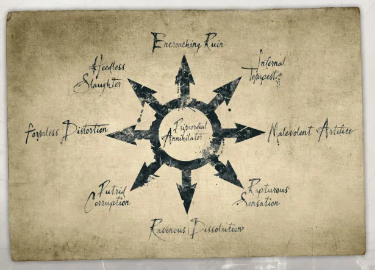
Ætheric Dominions: แปดด้านของ Chaos
เนื้อเรื่องแบ่ง Warp เป็น 8 "Ætheric Dominion" ตามลักษณะของ Chaos บางด้านมีเทพองค์ใหญ่เป็นตัวแทน:
| Dominion | ความหมาย |
|---|---|
| Encroaching Ruin | Chaos บริสุทธิ์ที่อยากทำลายทุกระเบียบ (Chaos Undivided) |
| Formless Distortion | การเปลี่ยนรูปไม่สิ้นสุด ปีศาจที่เป็นก้อนเนื้อไร้รูป |
| Heedless Slaughter | ความบ้าคลั่งแห่งการรบและการฆ่า |
| Putrid Corruption | ความเน่าเปื่อยและโรคภัย |
| Ravenous Dissolution | ความหิวโหยที่กลืนกินทุกอย่าง |
| Malevolent Artifice | เล่ห์กลและการวางแผนร้าย |
| Infernal Tempest | พายุเพลิงและพลังทำลายล้างของ Warp |
| Rapturous Sensation | ความหฤหรรษ์และความหลงใหลเกินขอบเขต |
02Formless Wastes: ดินแดนไร้รูปทรง
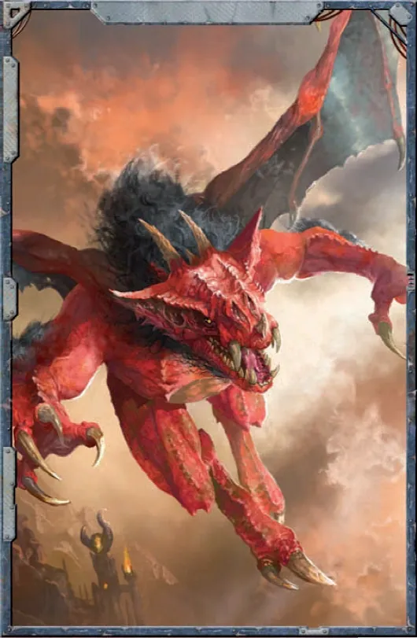
พื้นที่ส่วนใหญ่ของ Warp ที่เทพทั้งสี่ยังไม่ได้ยึดครอง ภูมิประเทศก่อตัวและพังทลายตลอดเวลาตามกระแสความคิดของสิ่งมีชีวิตทั้งกาแล็กซี มี แม่น้ำยางมะตอยไหลผ่านป่าที่กลายเป็นหิน ใต้ท้องฟ้าสีแดงเลือด บันไดยักษ์ไต่ขึ้นฟ้าแล้ววนกลับมาหาตัวเองไม่รู้จบ ปราสาทกระดูก ป้อมที่ทำจากของเหลวปีศาจ และเสาเพลิงบนขอบฟ้า
กล่าวกันว่า ทุกความฝัน ฝันร้าย และนิมิต ที่สิ่งมีชีวิตในกาแล็กซีเคยมี ล้วนมีภาพสะท้อนอยู่ที่นี่
อาณาเขตของ Daemon Prince
Greater Daemon และ Daemon Prince ที่มีพลังพอจะ "ตรึง" พื้นที่รอบตัวให้นิ่ง จะสร้างเกาะเล็ก ๆ ของตัวเองไว้ในนี้ บางแห่งอยู่ได้ชั่วพริบตา บางแห่งเก่าแก่พอ ๆ กับเทพ
Furies
ปีศาจไร้สังกัดที่คอยจ้องเหยื่อทั้งมนุษย์และปีศาจที่หลงเข้ามา และมักกัดกินปีศาจเล็ก ๆ ที่ Daemon Prince สร้างขึ้น
Forge of Souls
โรงหล่อปีศาจอันมืดมิดที่ตั้งอยู่ใน Formless Wastes เนื้อเรื่องยังเชื่อว่าเทพ Chaos รองบางองค์ก็มีอาณาเขตอยู่ในดินแดนนี้
03Realm of Chaos และ "Great Game"
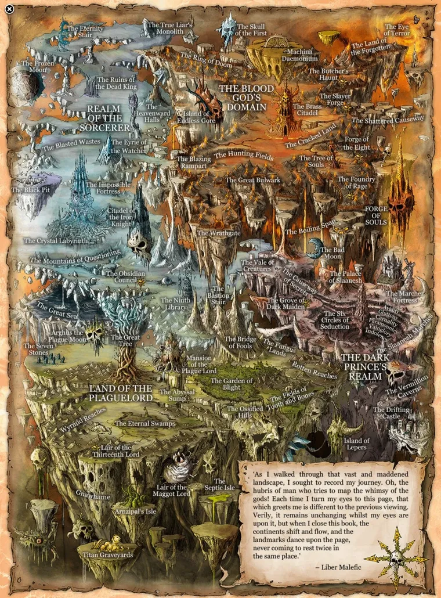
ใจกลางของ Warp คือ Realm of Chaos ที่เทพทั้งสี่แบ่งกันครอง เทพกับอาณาจักรของตนเป็นสิ่งเดียวกัน เพราะทำจากพลังของ Warp เหมือนกัน เทพองค์ไหนได้พลังจากโลกจริงมาก อาณาจักรก็ขยายกว้างขึ้น:
- Khorne: Blood God's Domain (Realm of Brass and Blood) สร้างจากความโกรธและการนองเลือด
- Tzeentch: Realm of the Sorcerer เวทมนตร์และพลังจิตที่เปลี่ยนรูปไม่หยุด
- Nurgle: Land of the Plaguelord (Garden of Nurgle) ความตาย ความเน่า และการเกิดใหม่
- Slaanesh: Dark Prince's Realm สวรรค์แห่งการยั่วยวนและความเกินพอดี
เทพแต่ละองค์มี "ร่าง" ที่สะท้อนตัวตนของตนสถิตอยู่ใจกลางอาณาจักร คอยเฝ้าดูว่ามีใครบุกรุกหรือมีโอกาสใหม่ ๆ ใน Warp หรือไม่
เทพทั้งสี่ต้องการครองจักรวาลแต่เพียงผู้เดียว จึงสู้กันใน Warp ตลอดกาล เมื่อองค์ไหนแข็งแกร่งเกินไป องค์อื่นจะรวมหัวกันดึงลงมา วนเป็นวัฏจักรไม่สิ้นสุด เนื้อเรื่องบอกว่าถ้าเกมนี้หยุดลง Warp จะนิ่งสนิทเหมือนก่อนมีสิ่งมีชีวิต สงครามของผู้ติดตามในโลกจริงก็คือเกมเดียวกันนี้ (ดูเทพแต่ละองค์ที่ เทพเจ้าแห่ง 40K)
04Blood God's Domain: อาณาจักรเลือดและทองเหลืองของ Khorne
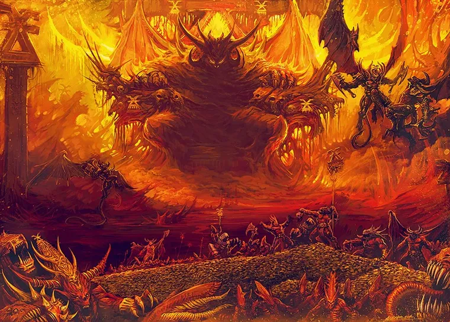
Khorne ถูกบรรยายเป็นร่างยักษ์สูงหลายร้อยฟุต หน้าเหมือนสุนัขดุร้าย สวมหมวกประดับกะโหลกของกษัตริย์ผู้พิชิต เกราะทองเหลืองและเหล็กดำซ้อนกันเป็นชั้น เขานั่งบนบัลลังก์ทองเหลืองแกะสลักบนยอดภูเขากะโหลก ซึ่งกองขึ้นจากหัวของแชมเปี้ยนของตนและศัตรูที่พวกเขาสังหาร
อาณาจักรนี้แทบไม่มีอะไรนอกจากสนามรบ นักรบของ Khorne ฆ่ากันเองไม่หยุด เพราะเลือดทุกหยดคือเครื่องบูชา
ข้างในมีอะไร (จากขอบเข้าสู่ใจกลาง)
- Khorne's Rage — วงแหวนภูเขาไฟ ภูเขาไฟสูงหลายร้อยกิโลเมตรล้อมขอบอาณาจักร พ่นควันดำและทองเหลืองหลอมละลายเป็นกำแพงที่มองไม่ทะลุ ในเมฆเถ้ามีพายุเลือดและสายฟ้าสีแดง ใครบุกเข้ามา หินและทองเหลืองจะลุกขึ้นเป็นปีศาจทุบผู้บุกรุก แล้วกองลงนิ่งเมื่อหมดหน้าที่
- Daemon Forges — โรงหลอมอาวุธ ที่เชิงภูเขาไฟ ปีศาจเตาหลอมตีขวาน ดาบ ค้อน เกราะ และชิ้นส่วนของ Daemon Engine ป้อนสงครามของ Khorne ภูเขาไฟอาจระเบิดท่วมโรงหลอมได้ทุกเมื่อ ซึ่ง Khorne ไม่สนใจ
- Blood Pits — บ่อเลือด หลุมยักษ์ที่พลังของ Warp มารวมตัวจนกัดลึกลงในพื้นดิน Khorne สั่งให้บริวารเก็บเลือดจากโลกจริงมาเติม และจากบ่อเหล่านี้ปีศาจตัวใหม่จะผุดขึ้นมาแทนตัวที่ตายไป
- Rivers of Blood — แม่น้ำเลือด แม่น้ำกว้างหลายกิโลเมตรที่เลือดเดือดพล่าน เลือดเกือบทุกหยดที่หลั่งเพื่อ Khorne ในโลกจริงไหลมาที่นี่ ไอเลือดลอยคลุมเป็นหมอกแดง
- Lake of Slaughter — ทะเลสาบแห่งการสังหาร แม่น้ำเลือดนับพันสายตกจากหน้าผาสูงหลายกิโลเมตรลงสู่ทะเลสาบที่ใหญ่กว่ามหาสมุทรใด ๆ ในโลกจริง มีสัตว์ประหลาดทองเหลืองและกระดูกแหวกว่าย Bloodthirster สู้กับมังกรที่ทำจากเลือด และคลื่นบนผิวน้ำก่อตัวเป็นนักรบที่ปะทะกันเอง
- Brass Citadel — ป้อมทองเหลือง อีกฝั่งของทะเลสาบคือทุ่งกะโหลกยาวหลายกิโลเมตร ก่อนถึงกำแพงดำของป้อม ปีศาจยามเฝ้าบนกำแพง Flesh Hound นับพันลาดตระเวน และ Bloodthirster ชั้นยอดบินวนอยู่เหนือป้อม
- Throne of Skulls — บัลลังก์กะโหลก ใจกลางป้อม เลยบันได Bastion Stair และเสาเหล็กทั้งแปด Khorne นั่งบัญชาการ Blood Legion จากที่นี่ ทุกชัยชนะทำให้เขากระหายมากขึ้น แชมเปี้ยนที่ล้มเหลวจะถูกรีดเลือดเติมลงแม่น้ำ
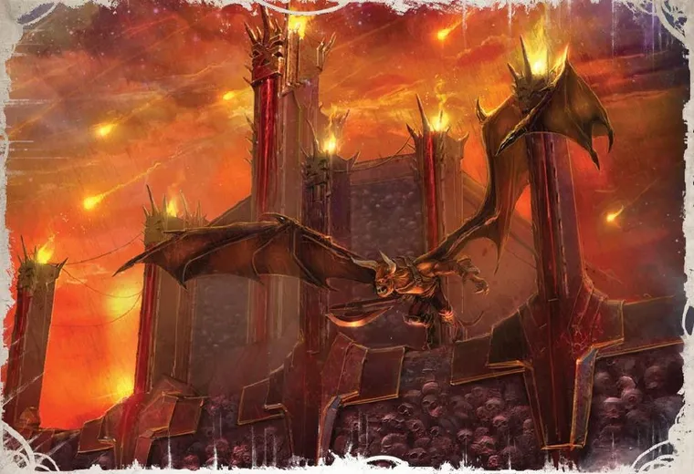
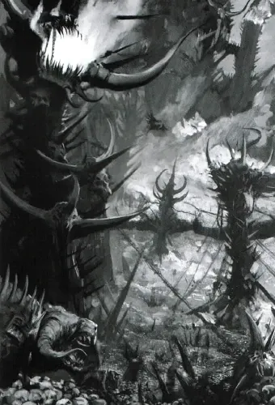
05Crystal Labyrinth: เขาวงกตคริสตัลของ Tzeentch
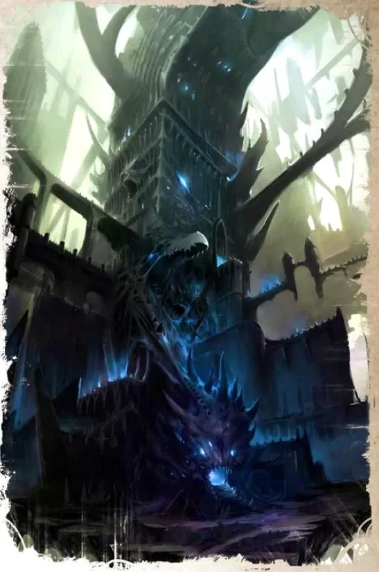
Tzeentch ได้พลังจากความหวัง ความทะเยอทะยาน และความปรารถนาจะเปลี่ยนแปลงของทุกชีวิต อาณาจักร Realm of the Sorcerer ของเขาเปลี่ยนแปลงตลอดเวลาจนแทบไม่มีใครเข้าใจ ผู้มาเยือนส่วนใหญ่ เสียสติอย่างรวดเร็ว คนที่จิตแข็งมากอาจเข้าใจได้แค่ "หนึ่งด้าน" ของดินแดนที่มีนับไม่ถ้วนด้าน
คำบอกเล่าที่ตรงกันพูดถึง เขาวงกตคริสตัลขนาดมหึมา ตั้งบนที่ราบสูงสีรุ้งที่เงาวับเหมือนโอปอล ทางเดินปรากฏ ละลาย รวม แยก และเปลี่ยนทิศเองตลอดเวลา มีเพียง Lord of Change กับคนที่บ้าไปแล้วเท่านั้นที่หาทางได้ เขาวงกตจึงไม่ต้องมียามเฝ้า
คริสตัลที่ฉายภาพจิตใจ
คนที่จ้องเข้าไปในผนังคริสตัลจะเห็นความกลัว ความหวัง ความฝัน อดีตทั้งจริงและไม่จริง และอนาคตที่อาจเกิดขึ้น มีเรื่องเล่าถึงผู้รอดชีวิตคนหนึ่งที่เห็นภาพตัวเองกลายเป็นก้อนเนื้อหนวดยุ่บยั่บ พอละสายตาได้ก็พบว่าเวลาผ่านไปหลายวัน และร่างของเขากลายเป็น Chaos Spawn จริง ๆ บันทึกของจักรวรรดิระบุว่าผู้รอดชีวิตทั้งสามรายในเรื่องนี้ฆ่าตัวตาย เสียสติ และถูก Inquisition ประหาร ตามลำดับ
เวลาที่บิดเบี้ยว
จ้องคริสตัลไม่กี่นาที โลกจริงอาจผ่านไปเป็นปี สองคนเข้าไปพร้อมกัน คนหนึ่งออกมาแล้วบอกว่าผ่านไปหลายปี อีกคนหายไปหลายศตวรรษแต่สาบานว่าไปแค่ไม่กี่นาที หลายคนเพลินจนตายเพราะขาดน้ำ บางคนเดินวนอยู่หลายปีโดยไม่กินไม่นอน
Guardian of the Maze และประตูทั้งเก้า ตำนาน
ตำนานเล่าถึงเส้นทางสู่ "ความรู้ไม่สิ้นสุด" ที่ต้องผ่านประตูโค้งสีทอง 9 บาน ห่อด้วยไฟ Warp สีฟ้าและชมพู ผู้เฝ้าประตูปรากฏเป็น ปากยักษ์ลอยอยู่เหนือทั้งเก้าประตูพร้อมกัน และถามปริศนาจาก 999 ปริศนาของ Tzaratxoth ตอบผิดแม้ข้อเดียว จะต้องเดินหลงในเขาวงกตไปชั่วนิรันดร์
Impossible Fortress และห้องสมุดลับ
ใจกลางเขาวงกต (ถ้าคำว่า "ใจกลาง" ใช้กับที่นี่ได้) คือป้อมคริสตัลที่ยอดหอผุดขึ้นเอง มีหอไฟสีฟ้าและชมพู ประตูเปิดช้า ๆ แล้วงับปิดเหมือนปากสัตว์ร้ายก่อนหายไป เล่ากันว่าข้างในมี Hidden Library ที่เก็บความรู้ทุกอย่างที่เคยถูกบันทึก ทั้งเรื่องที่เขียนแล้วและยังไม่ได้เขียน รวมถึงอนาคตที่เป็นไปได้ทุกแบบ มีปีศาจ Horror เป็นบรรณารักษ์
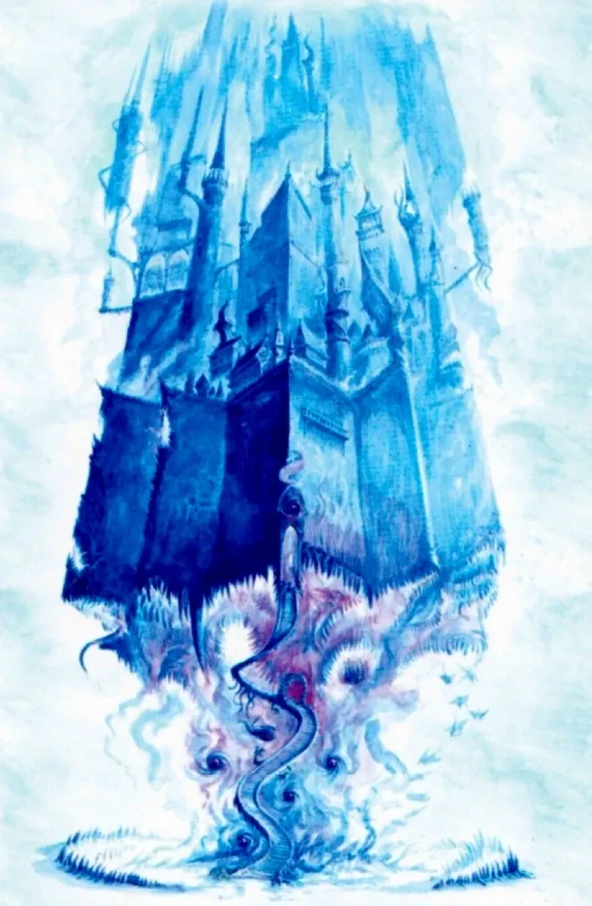
06Garden of Nurgle: สวนแห่งความเน่าเปื่อย
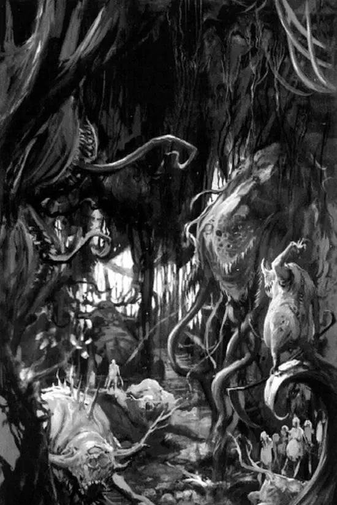
Nurgle ไม่ใช่เทพที่เศร้าหมอง แต่เป็น เทพแห่งชีวิตและเสียงหัวเราะ ในแบบของเขา เพราะจากความตายและการเน่าเปื่อย เชื้อโรค แมลง และสัตว์กินซากจะเกิดใหม่เสมอ อาณาจักรของเขาจึงเป็น "สวน" ที่เน่าและงอกไปพร้อมกัน ต้นไม้ผุพัง ดอกเห็ดราบาน ฝูงแมลงวันหึ่งไม่หยุด
ต่างจากเทพองค์อื่นที่นั่งอยู่แต่บนบัลลังก์ Nurgle ชอบ เดินเล่นในสวน พูดคุยกับปีศาจของตน และหยุดดูโรคใหม่กัดกินเชลย
จุดสำคัญในสวน
Mansion of the Plague Lord
คฤหาสน์ผุพังใจกลางสวน ปล่องไฟนับร้อยพ่น "ควัน" ที่จริงคือแมลงวันนับล้าน ท่อน้ำทิ้งคายด้วง หนอน และตะขาบประหลาด ต้นไม้กระดูกรอบบ้านออกผลที่เน่าตั้งแต่ยังไม่สุก Nurgle มักนั่งเก้าอี้ยักษ์ข้างประตู ชวนแขกเข้าไปเล่าเรื่องและดื่มของแปลก ๆ ด้วยกัน
ห้องใต้หลังคาและครัว
ห้องใต้หลังคาเก็บ "ตัวอย่าง" ผลงานของเขา Plaguebearer นับซ้ำไปมาไม่รู้จบ มีโหลอวัยวะของเหยื่อโรคระบาดจากทุกกาลเวลา และวิญญาณที่ถูกขังในขวดแก้วให้ค่อย ๆ มอดดับ ห้องครัวมีส่วนผสมเน่าเสียทุกชนิดที่นึกออก
Isha เทพีที่ถูกขัง ตำนาน Aeldari
ตามตำนานของ craftworld แห่งหนึ่ง Isha เทพีแห่งการเยียวยาของ Aeldari ไม่ได้ถูก Slaanesh กลืน แต่ถูก Nurgle ชิงตัวมา และขังไว้ในกรงสนิมข้างหม้อต้มโรค Nurgle บังคับให้นางดื่มโรคใหม่ทุกครั้งเพื่อดูว่าร้ายแรงแค่ไหน Isha หายเองได้ และแอบกระซิบวิธีรักษาโรคเหล่านั้นออกไปให้มนุษย์ในโลกจริง
Death Beds, Poxyards และทุ่งดอกระฆัง
Death Beds คือบ่อโคลนที่ขังผู้บุกรุก ใครเล่าเรื่องโลกภายนอกได้สนุก จะถูกดึงขึ้นมาเป็น "ภาชนะ" ของโรคใหม่แล้วส่งกลับไปแพร่ในโลกนั้น Poxyards คือลานทดลองโรค ส่วน Deathbell Lily คือทุ่งดอกไม้ที่บานและดังกริ๊งทุกครั้งที่มีคนตายด้วยโรคของ Nurgle
Seer กลุ่มหนึ่งจาก craftworld Lugganath ถอดจิตเข้าสู่สวนของ Nurgle เพื่อตามหา Isha หวังยุติโรคระบาดบน craftworld พวกเขาฝ่าพืชพรรณเข้าไปได้ง่ายในตอนแรก แต่แมลงวันในสวนกระซิบเตือน Nurgle ฝูง Plaguebearer ผุดขึ้นจากโคลนไม่หยุด การรบกินเวลาหลายวัน ขณะเดียวกันร่างจริงของพวกเขาในโลกจริงก็เริ่มชักกระตุกและติดโรคที่ตั้งใจจะมารักษานั่นเอง
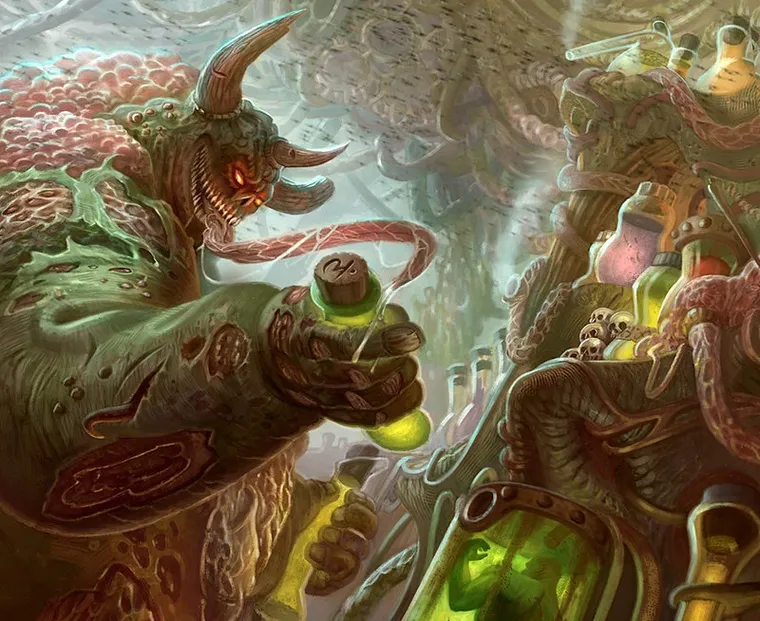
07Dark Prince's Realm: วงแหวนแห่งการยั่วยวนของ Slaanesh
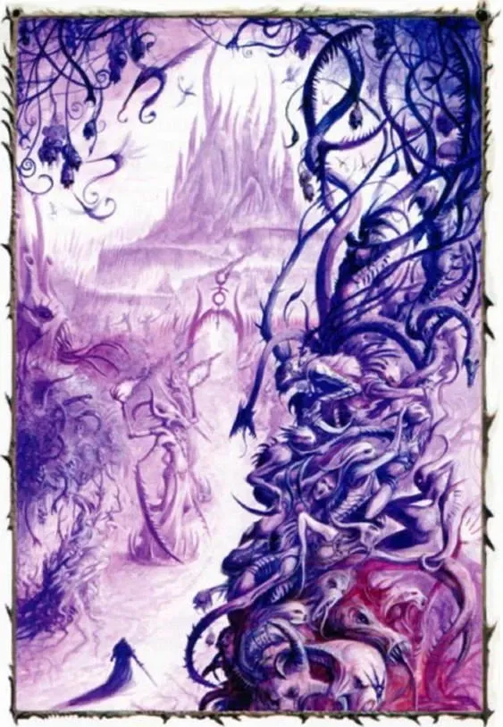
Slaanesh เป็นเทพองค์ที่อายุน้อยที่สุด เกิดจากความเสื่อมทรามของอาณาจักร Aeldari โบราณ อาณาจักรของ Slaanesh ไม่มีกำแพงหรือกองทัพเฝ้า แต่เป็น วงแหวนหกชั้น ที่แต่ละชั้นล่อลวงผู้มาเยือนด้วยความปรารถนาต่างกัน ส่วนใหญ่ติดกับดักตั้งแต่ชั้นแรก ๆ
รายละเอียดชั้นต่าง ๆ มาจาก คำสารภาพของพระคาร์ดินัลนอกรีต ที่ Ecclesiarchy ใช้เป็นเรื่องเตือนใจ เนื้อเรื่องเองก็บอกว่า "จะจริงหรือเป็นแค่อาการเพ้อ ก็ไม่สำคัญ"
- Excess of Riches — ความมั่งคั่ง ท้องฟ้าเต็มไปด้วยเพชรที่ดูเหมือนเอื้อมคว้าได้ ผู้คนปีนต้นไม้ทองคำสูงขึ้นเรื่อย ๆ จนลืมตัว
- Excess of Sustenance — การกินดื่ม ทะเลสาบไวน์ชั้นเลิศกว้างสุดตา คนส่วนใหญ่คุกเข่าดื่มจนเมาแล้วจมหายไป เกาะสีซีดกลางทะเลสาบที่แท้คือร่างยักษ์ที่หมอบอยู่
- Excess of Bodily Delights — ความสุขทางกาย ทุ่งหญ้าสีทองและกระโจมที่ทอจากเส้นใยแห่งความฝัน สะท้อนความปรารถนาลึก ๆ ของผู้มอง
- Excess of Adoration — การถูกยกย่อง ชั้นของผู้ที่โหยหาเกียรติและเสียงชื่นชม ประสบการณ์ของแต่ละคนไม่เหมือนกัน
- Excess of Achievement — ความสำเร็จ ป่าใหญ่ที่ดูสงบแต่เป็นกับดัก Slaanesh กระซิบให้กำลังใจความทะนงตน เหมือนที่เคยกระซิบกับ Primarch ผู้ทรยศ
- Excess of Repose — การพักผ่อน ชั้นสุดท้ายมอบ "ความสงบ" ให้ผู้ที่เหนื่อยล้า ใครต้านทานได้ถึงตรงนี้ก็นับเป็นตำนานแล้ว
- Palace of Pleasure — วังแห่งความหฤหรรษ์ ไม่มีกำแพงหรือทหาร มีเพียงรูปปั้นหินอ่อนและต้นไม้ที่งดงามไร้ที่ติ เมื่อผู้บุกรุกยังงงอยู่ อากาศจะนิ่ง เสียงประสานที่มองไม่เห็นดังขึ้น แล้วเทพก็ก้าวออกมาจากวัง
Aeldari เรียก Slaanesh ว่า "She Who Thirsts" เพราะวิญญาณของ Aeldari ทุกตนถูก Slaanesh รอกลืนหลังความตาย Craftworld Aeldari จึงเก็บวิญญาณไว้ใน Spirit Stone ส่วน Drukhari ยืดชีวิตด้วยการดูดความทุกข์ของผู้อื่น (ดู Commorragh)
08สิ่งมีชีวิตใน Warp
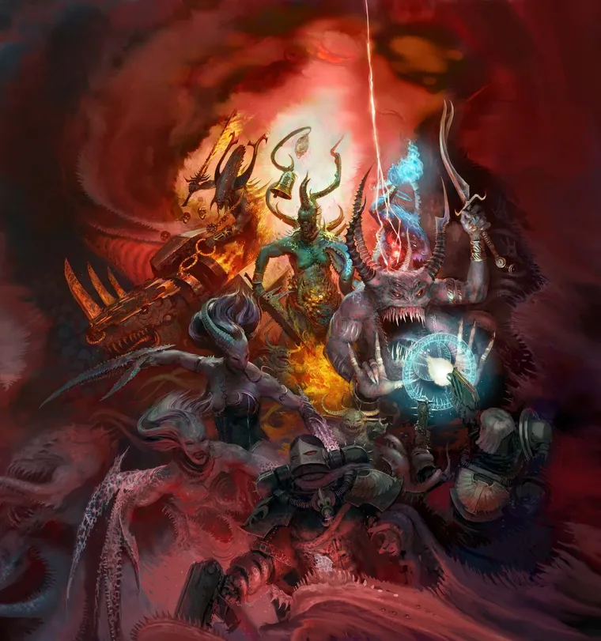
ปีศาจ (Daemon) คือผู้อาศัยส่วนใหญ่ของ Warp เกิดเมื่อเทพ Chaos แบ่งพลังของตนส่วนหนึ่งออกมาสร้างตัวตนใหม่ที่มีความคิดและบุคลิกเป็นของตัวเอง เทพจะเรียกพลังคืนเมื่อไรก็ได้ ปีศาจจึงไม่กล้าขัดคำสั่งตรง ๆ
ปีศาจไม่มีร่างกายจริง ร่างที่เห็นคือพลัง Warp ที่ขึ้นรูปตามลักษณะของเทพผู้สร้าง การ "ฆ่า" ปีศาจในโลกจริงแค่ขับมันกลับเข้า Warp ตำนานบอกว่ามันจะกลับมาไม่ได้จนกว่าจะครบ พันปีกับอีกหนึ่งวัน แต่ไม่มีใครพิสูจน์ได้ เพราะเวลาใน Warp ไม่มีความหมาย
การทำลายปีศาจให้สิ้นซากจริง ๆ (True Death) ยากมาก และมักต้องใช้วัตถุศักดิ์สิทธิ์หรือพลังจิตระดับพิเศษ
| ประเภท | คืออะไร | ตัวอย่าง |
|---|---|---|
| Greater Daemon | ปีศาจชั้นสูงสุด เป็นผู้คุมอาณาจักรของเทพ และมักนำการบุกโลกจริง บางตนแทบจะเป็นร่างอวตารของเทพ ผู้บูชาทั่วไปเรียกออกมาเองไม่ได้ | Bloodthirster, Lord of Change, Great Unclean One, Keeper of Secrets |
| Daemon Prince | มนุษย์หรือแชมเปี้ยนที่ได้รับรางวัลสูงสุดจากเทพ กลายเป็นปีศาจอมตะ | Angron, Mortarion, Magnus, Fulgrim (Daemon Primarch) |
| Herald | ปีศาจที่เทพโปรดปรานเป็นพิเศษ เป็นหัวหน้าของปีศาจชั้นล่าง | Herald of Khorne / Tzeentch / Nurgle / Slaanesh |
| Lesser Daemon | ทหารราบของกองทัพปีศาจ คือพวกที่มักตอบรับพิธีอัญเชิญของลัทธิ | Bloodletter, Horror, Plaguebearer, Daemonette, Nurgling |
| ปีศาจไร้สังกัด | ไม่ขึ้นกับเทพองค์ใดโดยตรง แต่ยังรับใช้ Chaos โดยรวม | Fury, Astral Spectre, Dispayre, Warp Predator, Soul Grinder |
สิ่งมีชีวิตอื่นที่ไม่ใช่ปีศาจของเทพ
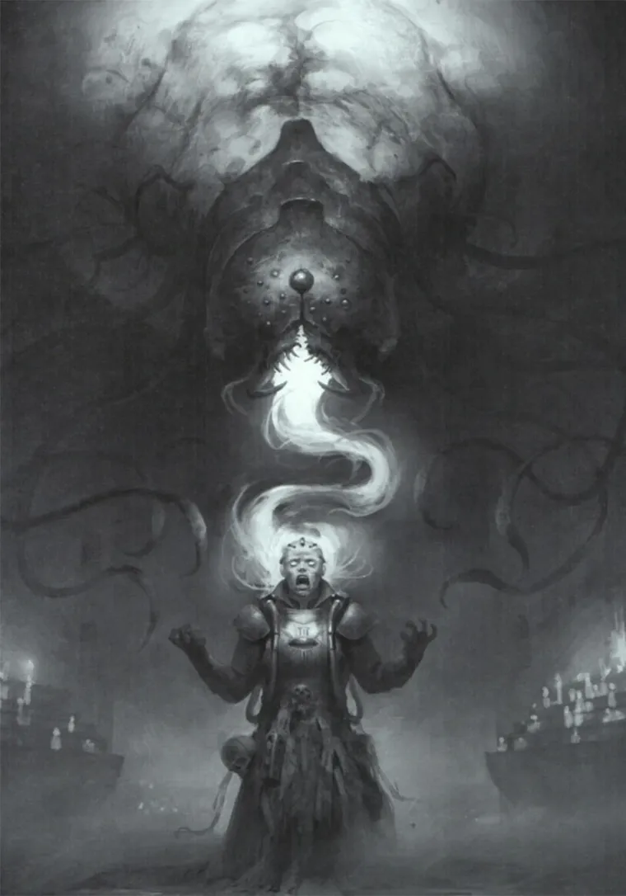
Enslaver
สิ่งมีชีวิตพื้นเมืองของ Warp รูปร่างคล้ายลูกผสมระหว่างแมงกะพรุนกับแมงมุม เกิดจากฝันร้ายของสิ่งมีชีวิต และว่ายหาเหยื่อใน Warp เหมือนฉลาม มันควบคุมจิตของ Psyker ให้กลายเป็น "ประตูมีชีวิต" เพื่อให้พวกของมันตามเข้ามาในโลกจริง จากนั้นก็ควบคุมคนธรรมดาได้ด้วย ควบคุมได้แม้แต่ Tyranid และปีศาจ เชื่อกันว่ามีแค่ Necron ที่ภูมิคุ้มกัน เมื่อหลายล้านปีก่อน "Enslaver Plague" เป็นส่วนหนึ่งของเหตุที่ทำให้อารยธรรม Old Ones ล่มสลาย
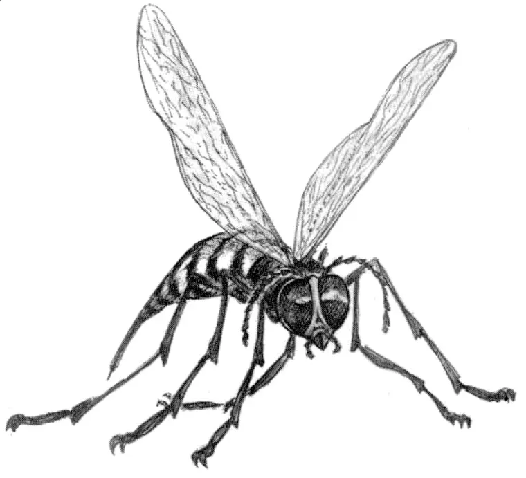
Psychneuein
แมลงจาก Warp ที่หน้าตาเหมือนตัวต่อยักษ์ ยาวราว 2.5 เมตร ถูกดึงดูดด้วยคลื่นจิตของ Psyker ที่ไม่มีการป้องกัน บาดเจ็บหนัก หรือเพิ่งตื่นพลัง มันวางไข่ในสมองของ Psyker ให้ตัวอ่อนเติบโต สำหรับคนธรรมดามันก็ยังเป็นสัตว์ร้ายมีพิษ พบรังของมันในส่วนลึกของ Webway ด้วย ซึ่งอาจเป็นถิ่นกำเนิดของมัน
ปีศาจเข้ามาในโลกจริงได้อย่างไร
ผ่านรอยแยก (Warp Rift)
ต้องมีรูรั่วระหว่างมิติ ตั้งแต่ม่านบาง ๆ ไปจนถึงแผลใหญ่อย่าง Eye of Terror ที่ปล่อยทั้งกองทัพออกมาได้ รอยแยกอาจเกิดเอง หรือถูกสร้างด้วยพิธีกรรม
สิงร่าง (Possession)
ปีศาจแทรกพลังของตนเข้าสู่จิตของ Psyker ผ่านความฝันและนิมิต จนร่างถูกบิดเป็นแบบที่ปีศาจต้องการ Psyker ที่ไม่ได้ฝึกจึงเป็นสิ่งที่จักรวรรดิกลัวที่สุด
ถูกผูกมัด (Bound)
พิธีเวทบังคับปีศาจให้รับใช้ได้ เช่น ขังไว้ในอาวุธ (Daemon Weapon) หรือในร่างมนุษย์ (Daemonhost) ที่ Inquisitor สายหัวรุนแรงใช้ แต่ปีศาจที่ถูกผูกจะแค้นและพยายามกลืนวิญญาณผู้ใช้เสมอ
ชื่อแท้ (True Name): ปีศาจทุกตนซ่อนชื่อจริงไว้ ใครรู้ชื่อแท้จะมีอำนาจเหนือมัน ปีศาจจึงใช้ชื่อเล่นหรือฉายาแทน แม้แต่กับปีศาจด้วยกันเอง
09Webway: มิติเขาวงกตระหว่างโลกจริงกับ Warp
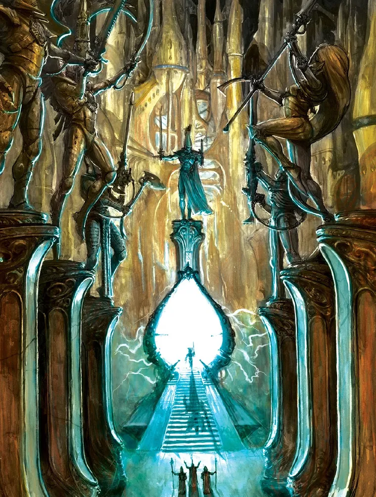
Webway คือโครงข่ายอุโมงค์ข้ามมิติที่ Old Ones "แบ่งกั้น" ออกมาจาก Warp เมื่อหลายล้านปีก่อน มันไม่ได้อยู่ในโลกจริงและไม่ได้อยู่ใน Warp แต่อยู่ "ระหว่าง" ทั้งสอง เนื้อเรื่องเปรียบว่าเหมือน ผิวของสระน้ำนิ่งสีดำ หรือ ผ้าไหมบาง ๆ ที่คลุมสิ่งสกปรกไว้
คนที่เห็นบรรยายว่ามันเหมือนหลอดเลือดแดงและเส้นเลือดฝอยที่ซับซ้อน หรืออุโมงค์เรืองแสงที่ถักทอกันเป็นเขาวงกต Old Ones สร้างไว้เพื่อเดินทางไปยังดาวนับไม่ถ้วนโดยไม่ต้องเสี่ยงกับ Warp แล้วสอนวิธีใช้ให้ Aeldari
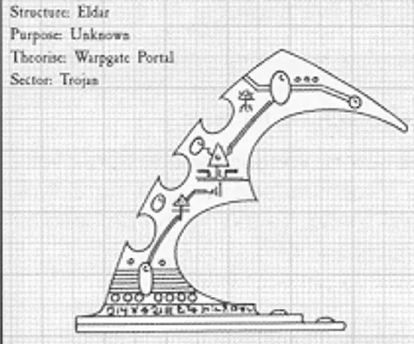
โครงสร้าง
Webway คือเครือข่าย "ประตู" (Webway Gate) ที่เชื่อมจุดตายตัวในโลกจริง มีตั้งแต่ประตูเล็กให้คนเดินผ่าน ไปจนถึงประตูยักษ์ที่ craftworld ทั้งลำผ่านได้ อุโมงค์หลักใหญ่พอให้ยานรบผ่าน แต่ส่วนใหญ่ผ่านได้แค่ทหารเดินเท้าหรือยานเล็ก เทคโนโลยีสร้างประตูสูญหายไปแล้ว ประตูที่ยังใช้ได้จึงเป็นสมบัติล้ำค่าของ Aeldari
สภาพปัจจุบัน: แตกร้าว
หลัง Fall of the Aeldari เส้นทางจำนวนมากฉีกขาด บางสายเป็นทางตัน บางสายไปสู่ที่ร้างหรือที่ปีศาจยึดไปแล้ว ประตูเหล่านั้นถูกผนึกด้วยอักขระพลังจิต เมื่อ Great Rift เปิด (Aeldari เรียกว่า Dathedian) เส้นทางหลักอีกหลายสายแตก บางส่วนกลายเป็นเกาะโดดเดี่ยว ประตูบางบานถูก Realm of Chaos กลืนเข้าไป
ทางลับของ Harlequins
เล่ากันว่ามีเส้นทางลับที่ทะลุผ่านเวลาและความเป็นจริง ซึ่งมีแต่ Harlequins ที่รู้ พวกเขาใช้ทางเหล่านี้ซุ่มโจมตีศัตรูจากทิศที่ไม่มีใครคาด และยังมี Atlas Infernal แผนที่ Webway โบราณที่ทำจากผิวหนังของ Sister of Silence ผู้หนึ่ง เส้นเลือดบนหน้ากระดาษจัดเรียงตัวเองใหม่เพื่อชี้ทางไปยังจุดหมายได้
ประตู Dolmen ของ Necron
Necron ไม่มี Psyker จึงเดินทางผ่าน Warp ไม่ได้ พวกมันใช้ Dolmen Gate ซึ่งเป็นประตูหินมีชีวิต เจาะเข้าไปใน Webway ด้วยความช่วยเหลือของ C'tan Nyadra'zatha แต่ประตูเหล่านี้ไม่เสถียร และ Webway ดูเหมือนจะรับรู้ได้ว่าถูกเจาะ จึงพยายามปิดกั้นส่วนที่ถูกบุกรุก
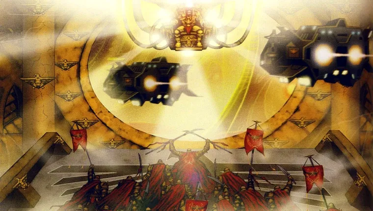
Imperial Webway Project: ความฝันที่พังทลายของจักรพรรดิ
ในยุค Unification Wars จักรพรรดิพบประตูสู่ Webway ใต้ทะเลทรายในทวีปเอเชียบน Terra พร้อมแกนของอุปกรณ์ขยายพลังจิตที่ต่อมากลายเป็น Golden Throne พระองค์ให้ Tech-priest หลายหมื่นคนดัดแปลงมันอย่างลับ ๆ อยู่หลายร้อยปี เป้าหมายคือ "Great Work" ที่จะเปิด Webway ให้มนุษย์ใช้ เดินทางทันทีโดยไม่ต้องพึ่ง Navigator และ Astropath อีก
แต่ข้อความเตือนทางจิตของ Magnus the Red ที่ทะลุโล่ของพระราชวังมาเตือนเรื่องการทรยศของ Horus ได้ทำให้โล่ป้องกันรอบประตู Webway ของ Terra ฉีกขาด ปีศาจทะลักเข้ามาในอุโมงค์ Legio Custodes และ Sisters of Silence ต้องสละชีวิตจำนวนมากใน War Within the Webway เพื่อกันไม่ให้ปีศาจทะลุถึง Terra จักรพรรดิต้องประทับบน Golden Throne เพื่อค้ำโล่ไว้ด้วยพลังของพระองค์เอง
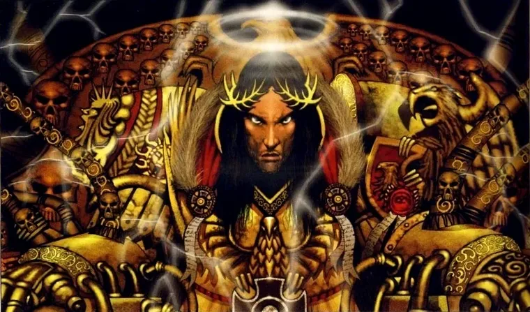
10Commorragh: นครมืดใน Webway
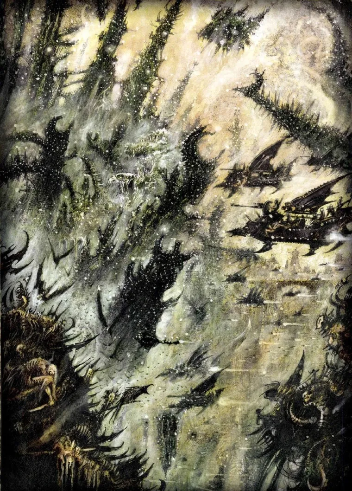
Commorragh คือนคร-รัฐมหึมาของ Drukhari ที่ซ่อนอยู่ลึกใน Webway คนนอกหาไม่เจอ เนื้อเรื่องเปรียบว่ามันใหญ่กว่าเมืองใหญ่ที่สุดในโลกจริง เหมือนภูเขาเทียบกับจอมปลวก ขนาดของมันเป็นไปไม่ได้ถ้าวัดด้วยวิธีปกติ แท้จริงคือกลุ่มนครและอาณาเขตบริวารที่เชื่อมกันด้วยประตูมิตินับไม่ถ้วน
เดิมเป็นเมืองท่าที่สำคัญที่สุดใน Webway ของอาณาจักร Aeldari และอยู่นอกอำนาจของสภาปกครอง จึงดึงดูดพวกที่อยากซ่อนการกระทำของตน เมื่อ Slaanesh ถือกำเนิด ชาวเมืองรอดจากการถูกกลืนในทันที แต่วิญญาณก็ยังค่อย ๆ รั่วไหลไปหา "She Who Thirsts" พวกเขาพบว่าการ ดูดกินความเจ็บปวดของผู้อื่น ช่วยประทังวิญญาณและทำให้ไม่แก่ Drukhari จึงถือกำเนิดขึ้น
ภูมิศาสตร์ของนครมืด
Ilmaea: ดวงอาทิตย์ที่ถูกขโมยมา
เหนือยอดหอคอยคือ ดวงอาทิตย์ดำ ดาวใกล้ดับที่ Aeldari โบราณจับมาขังไว้ในมิติย่อยเพื่อเป็นแหล่งพลังงาน บางครั้งเปลวสุริยะแลบเข้ามาในเมือง สะท้อนกระจกนับพันล้านบาน แต่ชาวเมืองแทบไม่สนใจ
Low Commorragh
ย่านการค้าโบราณรอบหอคอยกลางที่พังเพราะสงครามกลางเมือง เต็มไปด้วยซากปรักหักพังและท่าเรือแลกเปลี่ยน แออัดจนเดินได้หลายเดือนโดยไม่เห็นดวงอาทิตย์สักดวง ในสุสานใต้ดินมีสัตว์ที่ใหญ่และน่ากลัวกว่า Drukhari ซุ่มอยู่
High Commorragh
ย่านชั้นบนของ Kabal ชั้นสูง ตึกระฟ้าหมุนเกลียวสูงจนสุดสายตา รูปปั้น Archon สูงพันฟุตที่ยังสร้างไม่เสร็จ ทาสถูกแขวนบนใยเกือบล่องหนเพื่อแกะสลักหน้านายของตน มีฝนเลือดหยดลงจากยอดตึก และบนฟ้าคือถิ่นของ Scourge กับนักขับ Jetbike ที่ล่ากันเป็นกีฬา
สนามของ Wych Cult
สนามประลองหลายชั้นที่ทาสและนักรบนับพันตายอย่างโหดร้ายเพื่อให้ผู้ชม "ดื่มกิน" ความเจ็บปวด ผู้ปกครองรู้ดีว่าถ้าไม่มีการแสดงเหล่านี้ สังคม Drukhari จะล่มสลาย ชาวเมืองเรียกสิ่งนี้ว่า Lith'antu Khlavh "มีดที่ยั้งดาบ"
โลกใต้ดินของ Haemonculi
ใต้นครเป็นอาณาเขตของ Haemonculi นักทรมานโบราณที่ต้องทรมานผู้อื่นทุกวันเพื่อมีชีวิตอยู่ พวกเขาเจาะหอคอยกลับหัวเป็นห้องแล็บ ขายบริการดัดแปลงร่างกาย กลั่นยา และน้ำยาความงาม
Khaine's Gate: ประตูที่ห้ามเปิด
ลึกลงไปใน Undercore มีประตูเหล็กกลมยักษ์ สลักอักขระป้องกันและพันด้วยโซ่ starsteel ปิดตายมาตั้งแต่ Fall หลังประตูคือ รอยฉีกสู่ Warp ที่เย็บปิดไม่ได้ ถ้าวันหนึ่งประตูถูกเปิด ปีศาจจะบุกเข้ามากลืนวิญญาณชาว Commorragh ทั้งนคร
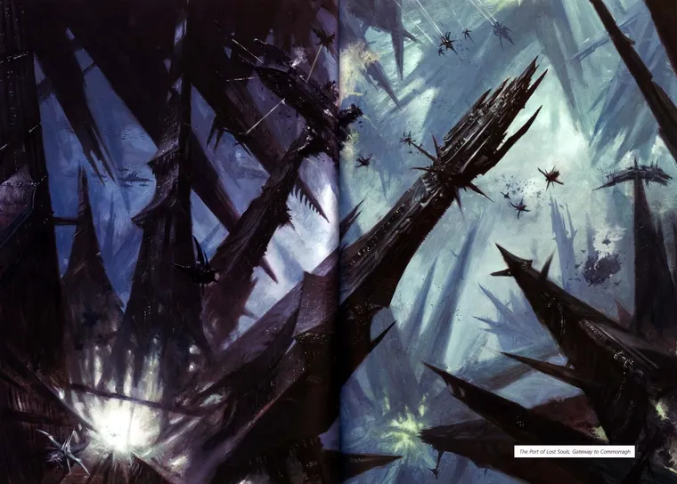
ยังมีย่านประหลาดอีกมาก เช่น สะพานกระดูกข้าม Rift of Dead Hope สู่ Pale Fortress, City of Titans ที่รูปปั้นยักษ์แสดงฉากลอบสังหารซ้ำไปมา และ Aelindrach นครที่ "จมลงไปในเงา" และอยู่หลายมิติพร้อมกัน ซึ่งเป็นรังของ Mandrake
11Black Library: ห้องสมุดต้องห้ามแห่ง Chaos
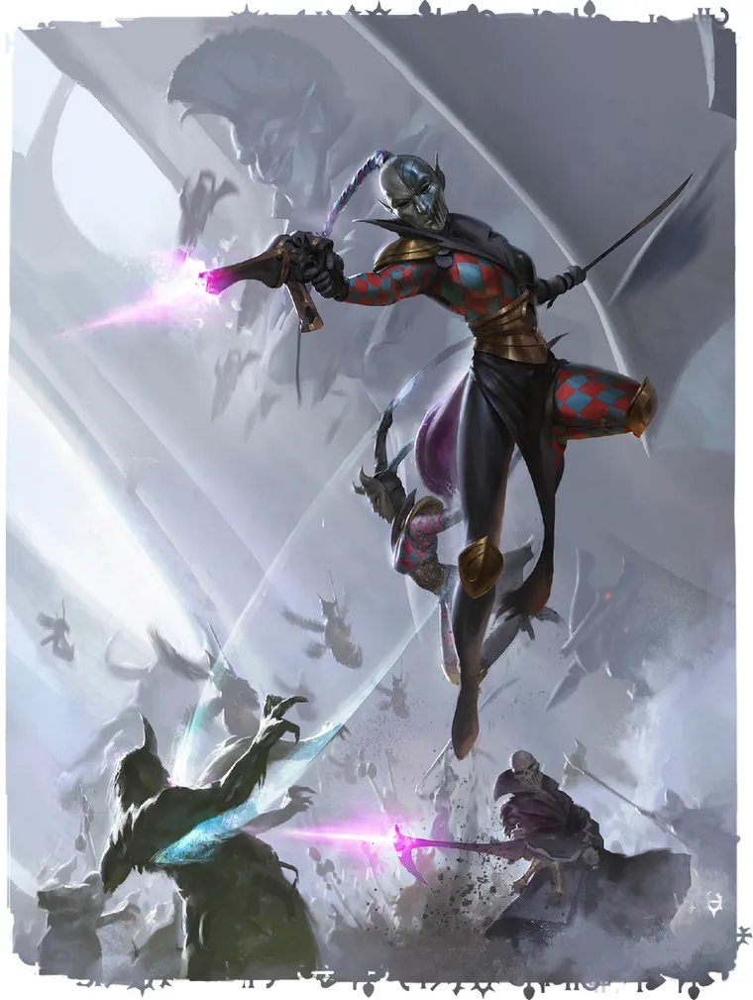
Black Library คือ craftworld "มืด" ที่ล่องไปเรื่อย ๆ ใน Webway เส้นทางของมันเป็นความลับที่มีแค่ Harlequins กับ Black Council (สภา Farseer ที่ฉลาดที่สุดจากทุก craftworld) เท่านั้นที่รู้ มันถูกห่อด้วยม่านพลังจิตที่แทบเจาะไม่ได้ ซ่อนตัวจากการตรวจจับทางจิตและขับไล่สิ่งมีชีวิตจาก Warp
ข้างในคือ ความรู้เรื่อง Chaos ทั้งหมดที่ Aeldari รวบรวมไว้ และความรู้ใหม่ที่เผ่าพันธุ์ไหนค้นพบก็ถูกนำมาเก็บไว้ที่นี่ด้วย รวมถึงสำเนาหนึ่งของ Book of Magnus
หน้าตาข้างใน
ยานขนาดมหึมาที่ดูไหม้เกรียมเป็นคริสตัล ภายในจงใจสร้างเป็นเขาวงกต มี "ห้องฟอง" เก็บโลงสถิตที่บรรจุคัมภีร์และสิ่งของอันตรายห้อยอยู่ตามโครงสร้าง และหอคอย เสา และป้อมอีกนับไม่ถ้วน
Wraith Tower
ส่วนที่เก็บบันทึกเรื่องความสัมพันธ์ระหว่างมนุษยชาติกับ Chaos รวมถึงความรู้ของผู้ทรยศแห่งจักรวรรดิ
บทสุดท้ายของ Cegorach
ใจกลางห้องสมุดมีห้องแสงเงิน บนแท่นมีหนังสือคริสตัลที่เชื่อว่าบันทึกคำของ Cegorach ถูกล่ามด้วยโซ่แสงมาตั้งแต่ Fall เมื่อ Great Rift เปิด โซ่แสงดับลงและหนังสือเปิดออก ข้างในคือ "บทสุดท้าย" การแสดงระดับกาแล็กซีที่อาจเปลี่ยนชะตาของ Aeldari
12ที่ที่ Warp ทะลักเข้าสู่โลกจริง
บางพื้นที่ในกาแล็กซี Warp กับโลกจริงผสมกันจนแยกไม่ออก นี่คือดินแดนที่ "อยู่ทั้งสองมิติพร้อมกัน"
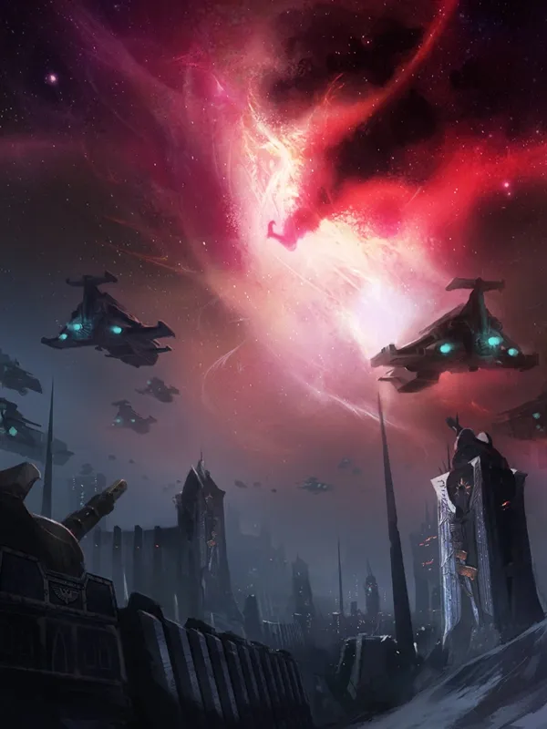
ภายใน Eye of Terror
Eye of Terror เป็นทั้งพายุ Warp ถาวรและรอยแยกที่ใหญ่ที่สุดในกาแล็กซี ข้างในมี ความเป็นจริงของมันเอง เวลาไร้ความหมาย สสาร ความคิด และพลังงานผสมกันจนแยกไม่ออก ดาวข้างในกลายเป็น Daemon World ที่แต่ละดวงมีกฎฟิสิกส์ของตัวเองตามเทพที่ผู้อาศัยบูชา ใจกลางคือ byssos รูในผืนความเป็นจริงที่พลัง Chaos ดิบ ๆ ไหลทะลักออกมา
บังคับทิศยานในนี้แทบไม่ได้ ยานที่เข้าใกล้อาจติดวังวนเวลาและถูกพาไปอดีต อนาคต หรือค้างอยู่ตลอดกาล กองทัพ Chaos จึงแค่ "ปล่อย" ยานเข้ากระแส Warp แล้วให้เทพพาไป การโจมตีของพวกมันเลยสุ่มและคาดเดาไม่ได้
Crone Worlds
ดาวบ้านเกิดดั้งเดิมของอาณาจักร Aeldari ที่ถูก Eye of Terror กลืนตอน Slaanesh ถือกำเนิด ตั้งชื่อตาม Morai-Heg เทพีแห่งโชคชะตา ปัจจุบันเป็นดินแดนของ Chaos ที่ยังมีวิญญาณ Aeldari โบราณติดค้างและโหยหาความตาย แต่ก็เป็น แหล่งเดียวของ Spirit Stone ใหม่ Aeldari ที่กล้าไปเก็บจำนวนมากไม่ได้กลับมา
ที่หลบภัยของผู้ทรยศ
Legion ผู้ทรยศหนีเข้ามาหลังยุค Horus Heresy และใช้ที่นี่เป็นฐานมากว่าหมื่นปี คนที่อยู่ข้างในถูก Chaos กัดกร่อนจนร่างกายสะท้อนตัวตนภายใน เช่น Death Guard ที่บูชา Nurgle มีร่างบวมเน่าเต็มไปด้วยโรค
Cadian Gate
ทางเข้า-ออกที่ "เสถียร" ที่สุด ความเสถียรนี้มาจาก Cadian Pylon เทคโนโลยี Necron อายุหลายล้านปีที่สร้างเพื่อตัดโลกจริงออกจาก Warp เมื่อ Cadia แตกในปี 999.M41 ประตูนี้ก็พังตามไปด้วย
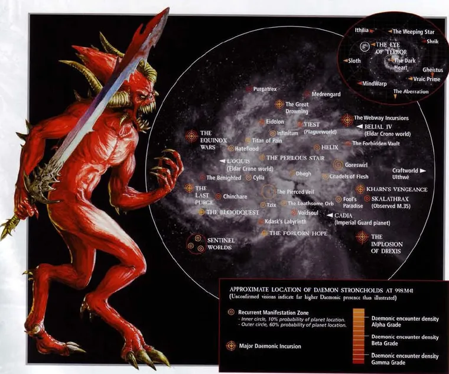
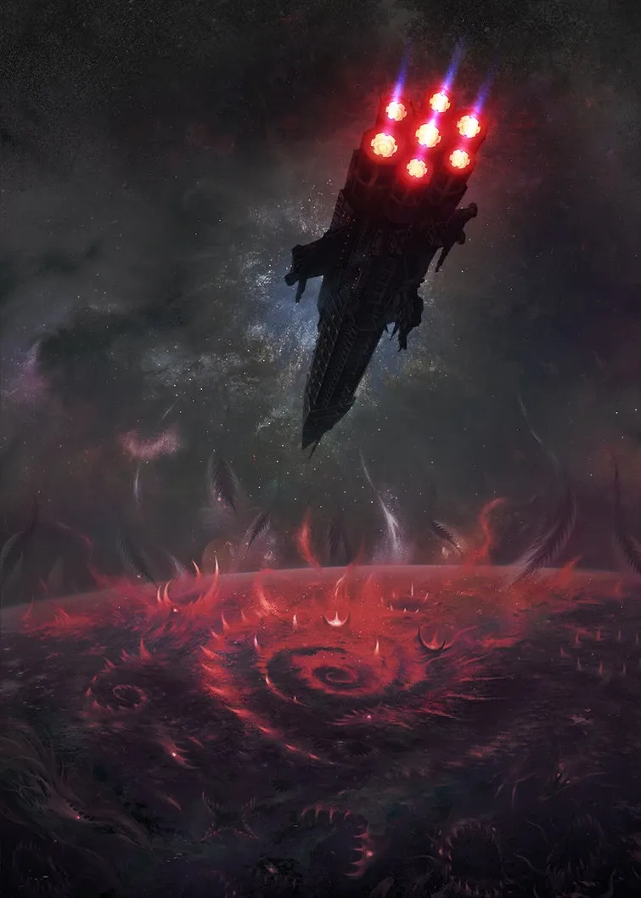
Daemon World: ดาวที่ Warp ยึดไปแล้ว
ดาวที่ติดอยู่ในรอยแยกนานจนถูก Warp ครอบงำทั้งดวง ไม่ได้ขึ้นกับกฎธรรมชาติอีกต่อไป แต่ขึ้นกับความต้องการของ Daemon Prince ผู้ปกครอง และจิตใต้สำนึกรวมของผู้อาศัย ปีศาจเดินทางจาก Warp มาที่ดาวเหล่านี้ได้โดยไม่มีอะไรกั้น เทพทั้งสี่จึงแย่งดาวกันไม่หยุด สงครามบนดาวบางดวงยืดเยื้อหลายร้อยปี
รายงานของ Inquisition ที่มีน้อยมากเล่าว่า หินมีเลือดไหลหรือกรีดร้องเมื่อถูกหยิบ ผู้รอดชีวิตถูกปีศาจไล่ล่าบนภูมิประเทศที่เปลี่ยนไปเรื่อย ๆ ต้องเผชิญความกลัวที่สุดของตัวเอง และบางเรื่องเล่าว่ามีคนต้อง ประกอบร่างตัวเองใหม่ทุกเช้า ก่อนลุกจากที่นอน และ "ค่าผ่านทาง" แรกของการรอดชีวิตมักเป็นวิญญาณส่วนหนึ่งของตัวเอง
Daemon World ส่วนใหญ่อยู่ใน Eye of Terror ดวงที่พบในเขตจักรวรรดิจะถูก Inquisition กักกันอย่างเข้มงวด ตัวอย่างที่มีชื่อ: Sortiarius (Planet of the Sorcerers) ดาวของ Thousand Sons ที่ Magnus ย้ายนคร Tizca มาไว้หลังการเผา Prospero
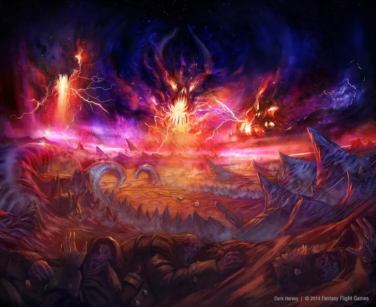
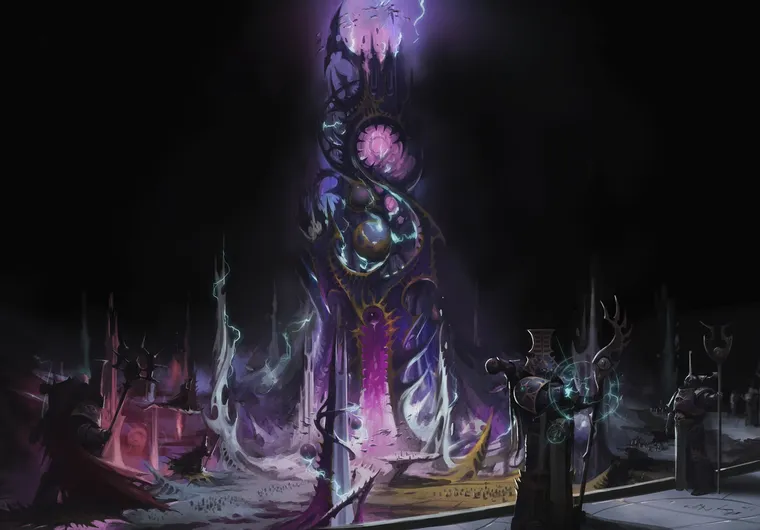
รอยแยกและพายุ Warp อื่น ๆ
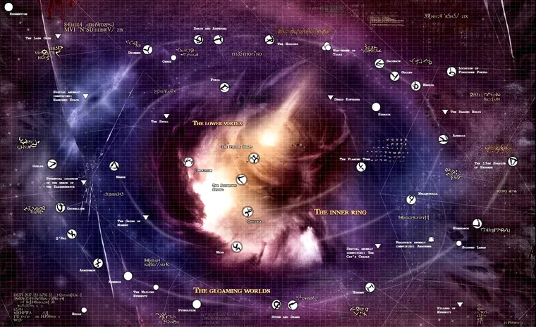
Screaming Vortex
พายุ Warp และรอยแยกถาวรระหว่าง Calixis Sector กับ Koronus Expanse เล็กกว่า Eye of Terror แต่รุนแรงไม่แพ้กัน พื้นที่ใหญ่กว่า sector ทั่วไปถูกตัดขาดจากโลกจริง มี Daemon World จำนวนมากและกลุ่มโจร Chaos แย่งชิงกัน (ภาพ: แผนที่ที่สาวกของเทพมืดวาดไว้)
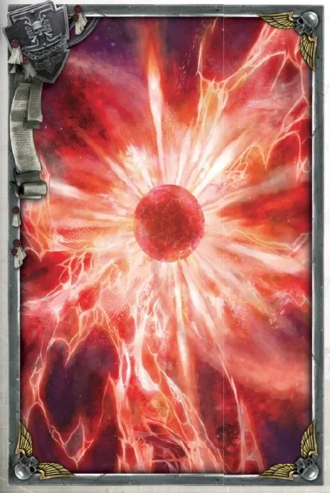
Hadex Anomaly
รอยแยกด้านเวลาใน Jericho Reach ปัจจุบันเป็นปลายด้านตะวันออกของ Great Rift มัน "เต้น" เหมือนหัวใจ ขยายและหดกลืนทั้งระบบดาวทุกไม่กี่สิบปี แสงสีแดงของมันถูกเห็นทั่ว Ultima Segmentum ในทันที ขัดกับกฎฟิสิกส์ บนดาวในแสงนั้น กลางวันกลางคืนยาวไม่เท่ากัน เงาบอกเหตุการณ์ในอนาคต และยานบางลำโผล่ออกมาก่อนวันที่ออกเดินทาง
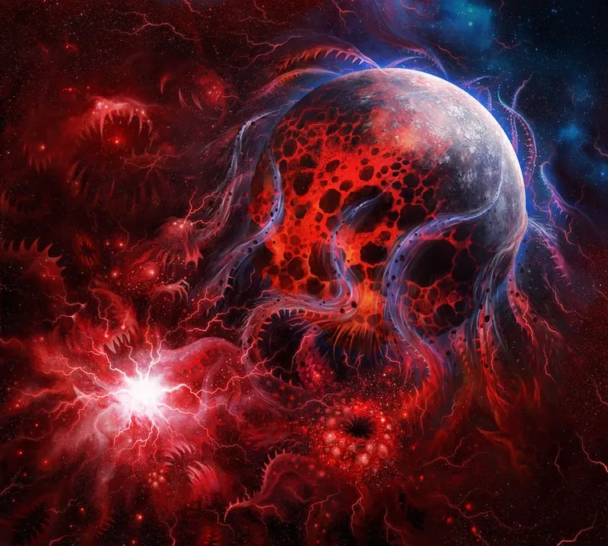
Warp Storm
ส่วนของ Warp ที่ปั่นป่วนจนกลายเป็นพายุ กินเวลาได้ตั้งแต่ไม่กี่สัปดาห์ถึงหลายศตวรรษ ตัดขาดการเดินทางและการสื่อสารของทั้ง sector ยานที่ติดพายุอาจถูกพัดไปโผล่ไกลหลายพันปีแสง หรือติดอยู่ใน Warp จน Gellar Field พัง
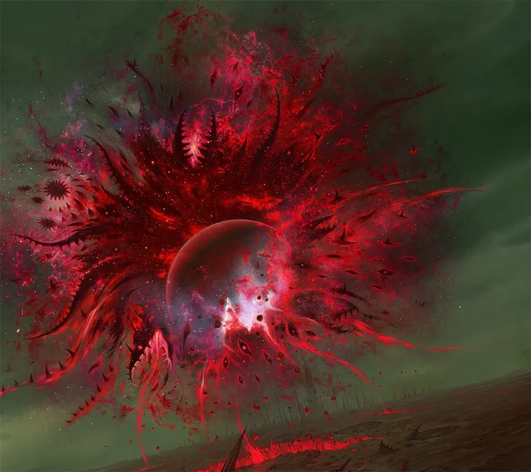
Warp Rift และ Ruinstorm
รอยแยกอาจเป็นวังวนพลังจิต ประตูไฟสีเขียว เมฆเงาทึบ หรือทะเลสาบหนองเดือด ในยุค Horus Heresy Lorgar สร้าง Ruinstorm พายุ Warp ยักษ์ที่ Erebus จุดชนวนในยุทธการ Calth เพื่อแยกกองทัพฝ่ายภักดีออกจากกัน ส่วน Great Rift ในปัจจุบันผ่ากาแล็กซีเป็นสองส่วน
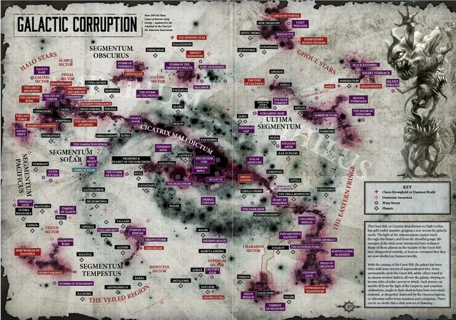
13มิติกระเป๋าและของที่ลอยออกมาจาก Warp
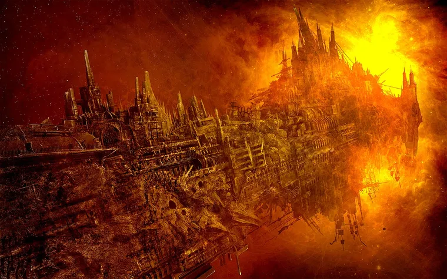
Space Hulk
ซากยานหลายลำที่ติดกันเป็นก้อนยักษ์ บางก้อนใหญ่จนมีบรรยากาศและแรงโน้มถ่วงของตัวเอง มัน หลุดเข้าออก Warp แบบสุ่ม อาจพา Ork, Genestealer หรือ Chaos Space Marine ที่หลับในสถิตไปโผล่ใกล้ดาวที่ไม่ทันตั้งตัว ข้างในอาจมีเทคโนโลยีจากยุค Dark Age of Technology ที่ Adeptus Mechanicus ต้องการมาก จักรวรรดิจึงส่ง Space Marine (มักเป็นหน่วย Terminator) เข้าไปกวาดล้าง หลาย hulk เป็นรังของ Genestealer
Tesseract Labyrinth
กล่องลูกบาศก์ขนาดเท่ากำปั้นของ Necron ที่แท้คือ ประตูสู่มิติกระเป๋าที่เป็นคุก ใช้คณิตศาสตร์หลายมิติและเทคโนโลยีเฟสขังศัตรูไว้ข้างใน ไม่มีทางหนีออกมาได้ Necron เคยใช้ขัง C'tan Shard และ Overlord บางคนพกเข้าสนามรบเพื่อขังศัตรูที่ยุ่งยาก หรือในยามวิกฤตก็ปล่อย C'tan Shard ออกมาใส่ศัตรู แต่เสี่ยงมากว่าจะจับกลับไม่ได้
Warp Gate
จุดในอวกาศที่เชื่อมกับอีกจุดด้วยอุโมงค์ผ่าน Warp ที่ไม่โดนความปั่นป่วนของ Warp จึงเดินทางได้ในเวลาที่แน่นอนและปลอดภัย ยังไม่มีใครรู้ว่ามันเกิดเองหรือมีคนสร้าง บางแห่งมีโครงสร้างเครื่องจักรล้อมไว้ บางแห่งก็เป็นแค่หลุมดำในอวกาศ
Warp Portal
จุดที่ Warp กับโลกจริงบรรจบเป็นทางเข้า-ออกที่เสถียร เข้าไปได้โดยไม่ต้องใช้ Warp Drive แต่ไม่มีอุโมงค์ ยานจะถูกโยนลงกระแส Warp ตรง ๆ ถ้าไม่มี Gellar Field ก็อยู่รอดได้ไม่นาน
14เข้าไปได้อย่างไร
| วิธี | ไปที่ไหน | ใครใช้ | ความเสี่ยง |
|---|---|---|---|
| Warp Drive + Gellar Field + Navigator | Warp (ผ่านแล้วออก) | จักรวรรดิ, Chaos, โจรสลัด | Gellar Field คือ "ฟองอากาศของโลกจริง" รอบยาน ถ้าพัง ปีศาจจะบุกเข้ายาน |
| Webway Gate | Webway | Aeldari, Drukhari, Harlequins | ปลอดภัยถ้าอยู่บนเส้นทางที่ดี แต่หลายสายพังหรือถูกปีศาจยึด |
| Dolmen Gate | เจาะเข้า Webway | Necron | ไม่เสถียร Webway พยายามปิดตัวเองหนี |
| Warp Gate / Warp Portal | อุโมงค์ใน Warp / Warp ตรง ๆ | ผู้ที่รู้ตำแหน่ง, xenos บางเผ่า | Gate ปลอดภัย แต่ Portal โยนยานลงกระแสตรง ๆ |
| ถอดจิต (Astral projection) | Realm of Chaos | Farseer, Psyker ระดับสูง | ร่างจริงในโลกจริงได้รับผลตามไปด้วย เช่น Seer แห่ง Lugganath |
| ผ่านรอยแยก (Eye of Terror, Maelstrom) | ดินแดนที่ Warp กับโลกจริงผสมกัน | Legion ผู้ทรยศ, โจรสลัด, ผู้หลบหนี | บังคับยานไม่ได้ อาจติดวังวนเวลา |
| ความตาย | Sea of Souls | ทุกคนที่มีวิญญาณ | วิญญาณไหลเข้า Warp ผู้บูชา Chaos ถูกเทพกลืน Aeldari ถูก Slaanesh ดูดกิน |
| ถูกพายุ Warp กลืน | Warp / Daemon World | ไม่มีใครตั้งใจ | ทั้งดาวอาจกลายเป็น Daemon World |
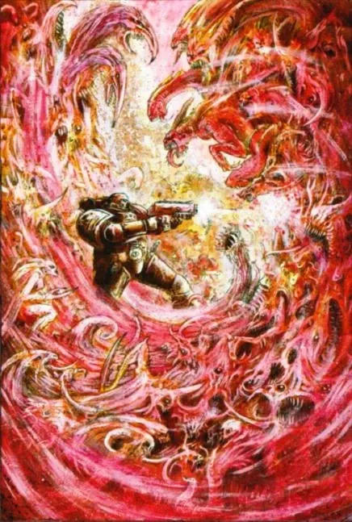
15เข้าไปเพื่ออะไร ได้อะไร และต้องจ่ายอะไร
การเดินทางเร็วกว่าแสง
จักรวรรดิทั้งจักรวรรดิพึ่ง Warp ในการขนส่ง ถ้าไม่มี Warp ดาวต่าง ๆ จะถูกตัดขาดจากกัน ราคา: ยานที่หายไปใน Warp นับไม่ถ้วน และต้องพึ่งแสง Astronomican ที่แลกด้วยชีวิต Psyker
การสื่อสาร
Astropath ส่งข้อความผ่าน Warp เป็นวิธีเดียวที่ส่งข่าวข้ามดาวได้เร็ว ราคา: ข้อความถูกตีความผิดบ่อย และพายุ Warp ตัดขาดการสื่อสารได้ทั้ง sector
พลังจิตและเวทมนตร์
Psyker ดึงพลังจาก Warp ส่วนพ่อมดของ Tzeentch ใช้เวทที่ทรงพลังที่สุดในจักรวาล ราคา: ทุกครั้งที่ใช้คือการเปิดประตูให้ปีศาจ
ความรู้ต้องห้าม
Black Library และ Hidden Library ของ Tzeentch เก็บความรู้ที่หาจากที่อื่นไม่ได้ ราคา: สติ วิญญาณ หรือการเดินหลงในเขาวงกตไปชั่วนิรันดร์
อาวุธและเครื่องจักรปีศาจ
ปีศาจที่ถูกขังในอาวุธ (Daemon Weapon) หรือยานรบ (Daemon Engine) ให้พลังเหนือธรรมชาติ ราคา: ปีศาจพยายามกลืนวิญญาณผู้ใช้อยู่เสมอ
ความเป็นอมตะ
แชมเปี้ยนของ Chaos หวังจะได้เป็น Daemon Prince ส่วน Drukhari ใน Commorragh ไม่แก่ตราบที่ยังได้กินความเจ็บปวดของผู้อื่น ราคา: คนส่วนใหญ่กลายเป็น Chaos Spawn ก่อน และ Drukhari ต้องทรมานผู้อื่นไปตลอดกาล
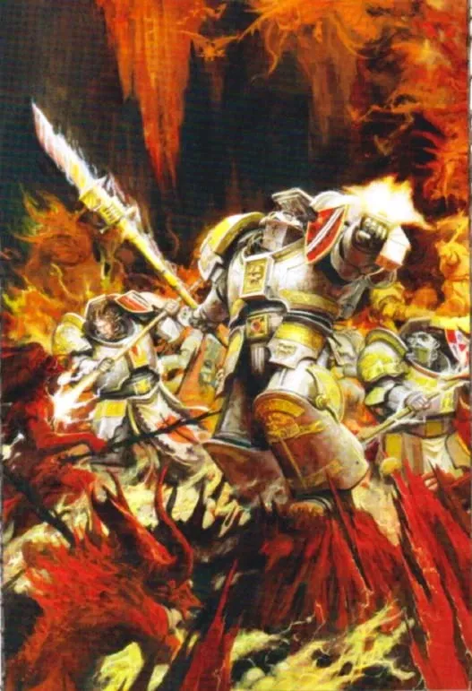
16ระดับอันตรายโดยสรุป
ตารางนี้ ผู้เขียนประเมินเอง จากเนื้อหาข้างบน เพื่อให้เปรียบเทียบง่าย ไม่ใช่ค่าที่ระบุในหนังสือ
| สถานที่ | ระดับ | อันตรายหลัก |
|---|---|---|
| Webway (เส้นทางที่ยังดี) | หลงทาง, ทางตัน, Drukhari, รัง Psychneuein | |
| Warp (บนยานที่มี Gellar Field) | เวลาคลาดเคลื่อน, หลงทาง, Gellar Field พัง | |
| Space Hulk | Genestealer, Ork, Chaos และการหลุดเข้า Warp แบบสุ่ม | |
| Commorragh (สำหรับคนนอก) | ถูกจับเป็นทาส ถูกทรมานไปชั่วชีวิต | |
| Eye of Terror / Daemon World | ปีศาจ, การกลายพันธุ์, กฎฟิสิกส์พัง, สูญเสียวิญญาณ | |
| อาณาจักรของเทพทั้งสี่ | แทบไม่มีใครกลับออกมา ผู้ที่รอดมักเสียสติ |
เนื้อหาเรียบเรียงจากบทความใน Warhammer 40k Wiki (Immaterium, Realm of Chaos, Chaos Daemons, Webway, Commorragh, Black Library, Eye of Terror, Daemon World, Space Hulk, Enslaver, Psychneuein, Tesseract Labyrinth, Dolmen Gate, Screaming Vortex, Hadex Anomaly, Ruinstorm) ซึ่งอ้างอิงหนังสือ Codex และนิยายของ Games Workshop เนื้อเรื่องบางส่วนต่างกันไปตามฉบับของหนังสือ ส่วนที่เป็นตำนานหรือคำเล่าลือในเนื้อเรื่องมีป้ายกำกับไว้ ภาพทั้งหมดเป็นลิขสิทธิ์ของ Games Workshop ดูรายการที่ เครดิตภาพ
อ่านต่อ: Warp และกลไกของจักรวาล เทพเจ้าแห่ง 40K Chaos Daemons Drukhari Harlequins